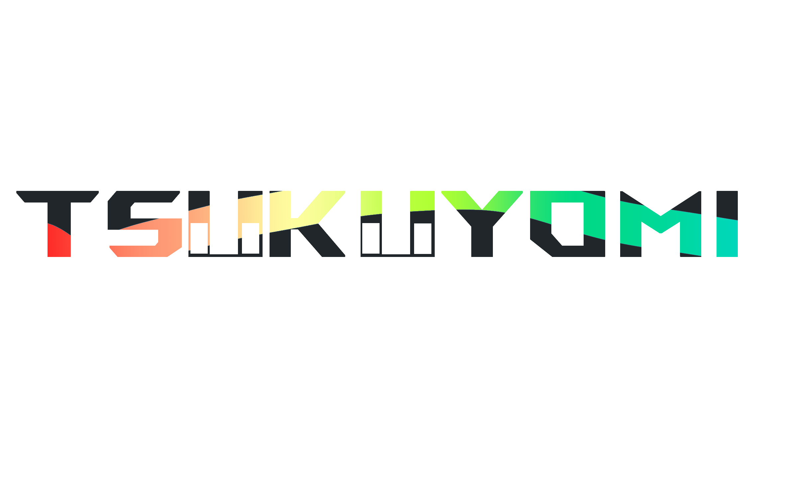

第一届月见八千代ACG杯
活动背景
为感谢广大粉丝与技术人员对 YachiyoChat 论坛、《超时空辉夜姬》国内社群的长期支持，我们决定举办本次挑战赛。这不仅是一次回馈社群的盛会，更是为了纪念项目初创期所有成员的辛勤付出与卓越贡献。
活动信息
活动全称：第一届月见八千代ACG杯挑战赛
活动性质：本次活动由粉丝自发组织，旨在促进社区交流，不代表《超时空辉夜姬》官方立场。
活动宣传语
"看完《超时空辉夜姬》还意犹未尽？快来参加八千代杯挑战赛，发布创意视频/图文，赢限定周边！"

为感谢广大粉丝与技术人员对 YachiyoChat 论坛、《超时空辉夜姬》国内社群的长期支持，我们决定举办本次挑战赛。这不仅是一次回馈社群的盛会，更是为了纪念项目初创期所有成员的辛勤付出与卓越贡献。
活动全称：第一届月见八千代ACG杯挑战赛
活动性质：本次活动由粉丝自发组织，旨在促进社区交流，不代表《超时空辉夜姬》官方立场。
"看完《超时空辉夜姬》还意犹未尽？快来参加八千代杯挑战赛，发布创意视频/图文，赢限定周边！"
只要是与"八千代杯"主题相关的创意内容，均在征集范围内。推荐形式：
零门槛全民参与！无任何限制条件，无论你是创作者、玩家，还是单纯的ACG爱好者，都可以加入。
秀出你的角色扮演风采！无论是高度还原的原剧情角色，还是独具创意的二创形象，都欢迎来展示你的魅力瞬间。
分享你与《超时空辉夜姬》相关的生活点滴。周边开箱、线下打卡、或者是游戏中的搞笑日常，记录每一个美好瞬间。
玩家聚集地！分享与超时空辉夜姬相关的游戏剪辑、MOD展示、相关整活，或是精彩的操作集锦，共同交流进步。
展示你的绘画与设计才华！同人插画、角色立绘、场景概念图、UI界面设计等，用画笔描绘出你心中的辉夜姬世界。
MMD动画、手工模型、配音翻唱、小说创作、音MAD等，单个作品限投一个板块。
第一届月见八千代ACG杯挑战赛 · 我们在月读等您！
主办：八千代的月读服务器全体成员
为感谢粉丝与技术人员对 YachiyoChat 论坛、《超时空辉夜姬》国内社群的支持，回馈社群、纪念初创期贡献，特举办本次挑战赛。
全称：八千代杯挑战赛
性质：粉丝自发组织，不代表《超时空辉夜姬》官方立场，请理性参与。
看完《超时空辉夜姬》还意犹未尽？快来参加八千代杯挑战赛，发布创意视频 / 图文，赢限定周边！# 超时空辉夜姬 #创意挑战
投稿渠道：YachiyoChat 论坛（带 #八千代杯标签）；B 站发布相关内容并 @主办方。
投稿形式：视频、图文、直播等。
投稿板块：#cos、# 生活、# 游戏、# 绘画、# 其它（单作品限投一个板块）。
参与条件：无限制。
有效判定：按附录《有效内容评定表》执行。
投稿：2026.4.17 18:00 — 2026.5.17 18:00
评选：2026.4.17 18:00 — 2026.5.23 18:00
结果公布：2026.5.24 16:00
板块一等奖：#cos、# 生活、# 游戏、# 绘画各 1 名
超新星奖：共 2 名
四大板块各取综合评分第 1 名，获板块一等奖。
从四大板块第 2、3 名及 #生活板块参选作品中，选出 2 名超新星奖。
xxxxxx
详见附录《评分细则》
2026.3.27
主办单位：<八千代的月读服务器>全体成员
针对当前QQ群<八千代的月读服务器@1094218305>群内成员日益增长的相关情况，纪念各位粉丝及相关技术人员为YachiyoChat论坛（以下简称"论坛"）建设及电影《超时空辉夜姬》国内社群建设的支持，特举办本次"《八千代杯》挑战赛"（以下简称"《八千代杯》"），旨在回馈广大粉丝，感谢各位在论坛初创期给予的支持。
本次活动全称："《八千代杯》挑战赛"
活动性质：本次活动系粉丝组织，不代表《超时空辉夜姬》官方立场，请各位粉丝理性参与
看完《超时空辉夜姬》，你是否也意犹未尽，渴望亲身踏入那场跨越维度的绮丽梦境？现在机会来了！加入我们的《八千代杯》挑战赛，发布创意视频/图文，赢取限定周边！快来书写属于你的篇章！#超时空辉夜姬 #创意挑战
本次活动采用"线上投稿"方式开展，各位参与者需在规定时间内于YachiyoChat论坛发布含"#八千代杯"标签的相关内容，同时可在哔哩哔哩（以下简称"b站"）平台发布《超时空辉夜姬》相关内容并@主办方参与投稿，投稿形式包括视频、帖子及直播等。
我们将开设#cos、#生活、#游戏、#绘画以及#其它共五个板块，用户可在论坛添加相关标签参与指定板块。
注：单一内容仅可参与单一板块，请在帖子前添加对应标签
报名要求：不限
投稿方式：在规定时间内于论坛发布含"#八千代杯"标签的有效内容即视为成功参与
有效内容判定：详见附录<有效内容评定表>
投稿入口开放时间：2026.4.17 18：00----2026.5.17 18：00
评选及审议：2026.4.17 18：00----2026.5.23 18：00
最终结果公布：2026.5.24 16：00
设#cos、#生活、#游戏、#绘画四大板块一等奖各一名
设"'超新星'奖"共两名
1.本次评选将各取#cos、#生活、#游戏、#绘画板块综合评分第一名（共计四名）
2.将从#cos、#生活、#游戏、#绘画四大板块各第二、三名暨#生活板块全体评选出"超新星"奖共两名
xxxxxx
详见附录<评分细则>
附录：<内容有效性评定指南> <评分细则>
2026.3.27
2026.3.27
本指南旨在指导用户完成对《八千代杯》挑战赛投稿内容的有效性评定，不具备具体实施与稿件指导功能，内容有效性最终评定结果请以@主办方为唯一标准，@主办方享有最终解释权
时长：.....
主题相关性与相关内容总量
......
粉丝共创 · 荣耀开启
FAN CREATION & GLORY KICK-OFF
为感谢广大粉丝与技术人员对YachiyoChat 论坛、《超时空辉夜姬》国内社群的长期支持，我们决定举办本次挑战赛。这不仅是一次回馈社群的盛会，更是为了纪念项目初创期所有成员的辛勤付出与卓越贡献。
"人心齐，泰山移。社区的繁荣离不开每一位成员的热情投入，希望这次活动能成为大家连接彼此、共同回忆的美好契机。"
▍ 活动全称
第一届月见八千代ACG杯挑战赛
▍ 活动性质
本次活动由粉丝自发组织，旨在促进社区交流，不代表《超时空辉夜姬》官方立场。
请各位参与者秉持理性、友好的态度，共同维护一个积极健康的创作环境，享受创作与交流的乐趣。
01. 主题限定 · THEME
#超时空辉夜姬
围绕《超时空辉夜姬》IP进行二创，剧情延展、角色解读、世界观补全均可。
02. 多元创作 · FORMAT
#创意视频 / 图文
形式不限！COS美图、混剪视频、手书动画、条漫插画、深度解析长文，只要有创意就能投！
03. 惊喜好礼 · REWARD
赢取神秘礼品
由月人bro提供の神秘礼品
04. 即刻参与 · ACTION
#参赛指南
各位参与者需在规定时间内于YachiyoChat论坛发布含"#八千代杯"标签的相关内容，同时可在哔哩哔哩（以下简称"b站"）平台发布《超时空辉夜姬》相关内容并@主办方参与投稿，投稿形式包括视频、帖子及直播等。
"看完《超时空辉夜姬》还意犹未尽？"
那就把你的脑洞和热情变成作品，让更多人看到！
官方投稿渠道
● YachiyoChat 论坛 发布内容时，请务必带上#八千代杯话题标签。
● Bilibili (B站) 发布相关作品动态，并在内容中@主办方官方账号。
内容形式不限
只要是与"八千代杯"主题相关的创意内容，均在征集范围内。
推荐形式： 游戏实况视频、二创图文、Cosplay、绘画创作等。
零门槛全民参与
无任何限制条件 无论你是创作者、玩家，还是单纯的ACG爱好者，都可以加入。
Tips:内容需遵守社区规范，积极向上。
#COS角色扮演
秀出你的角色扮演风采！无论是高度还原的原剧情角色，还是独具创意的二创形象，都欢迎来展示你的魅力瞬间。
#LIFE趣味生活
分享你与《超时空辉夜姬》相关的生活点滴。周边开箱、线下打卡、或者是游戏中的搞笑日常，记录每一个美好瞬间。
#ART绘梦空间
展示你的绘画与设计才华！同人插画、角色立绘、场景概念图、UI界面设计等，用画笔描绘出你心中的辉夜姬世界。
#GAME游戏攻略
玩家聚集地！分享与超时空辉夜姬相关的游戏剪辑、MOD展示、相关整活，或是精彩的操作集锦，共同交流进步。
#OTHER
创意无限大集合 MMD动画 | 手工模型 配音翻唱 | 小说创作 音MAD等
注：单个作品限投一个板块，多板块重复投稿将视为无效参与，感谢配合。
投稿阶段：
2026年4月17日 18:00 —2026年5月17日 18:00
评选阶段：
2026年4月17日 18:00 —2026年5月23日 18:00
结果公布：
2026年5月24日 16:00
🏆 板块一等奖
在#cos、#生活、#游戏、#绘画四大核心板块中，各评选出综合评分第1名，共计4名获奖者。
⭐ 超新星奖
从四大板块的第2、3名，以及#其他板块中，综合作品质量与潜力，评选出2名最具潜力的超新星创作者。
板块一等奖评选标准
覆盖 #cos、#生活、#游戏、#绘画 四大核心板块。各板块依据综合评分排名，取第1名授予"板块一等奖"荣誉。
超新星奖评选标准
候选池包含四大板块综合评分第2、3名作品，以及#其他板块所有参选作品。通过二次综合评审，最终选拔出 2 名优秀创作者获得"超新星奖"。
注：活动详细的打分维度与具体分值，可查阅附录文件《内容有效性评定指南》与《评分细则》，确保评选过程公开透明。
期！待！您！来！
第一届月见八千代ACG杯挑战赛 · 我们在月读等您！